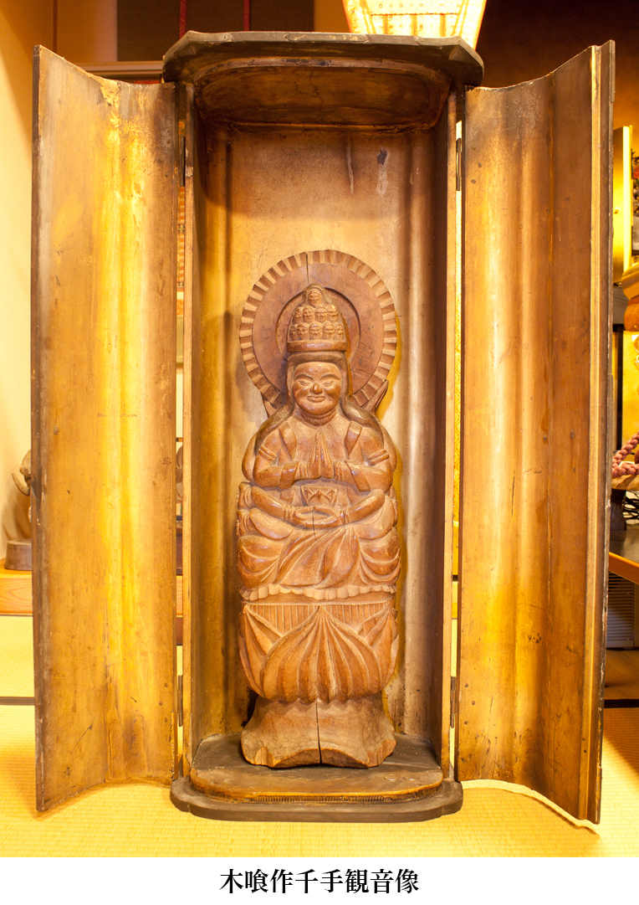
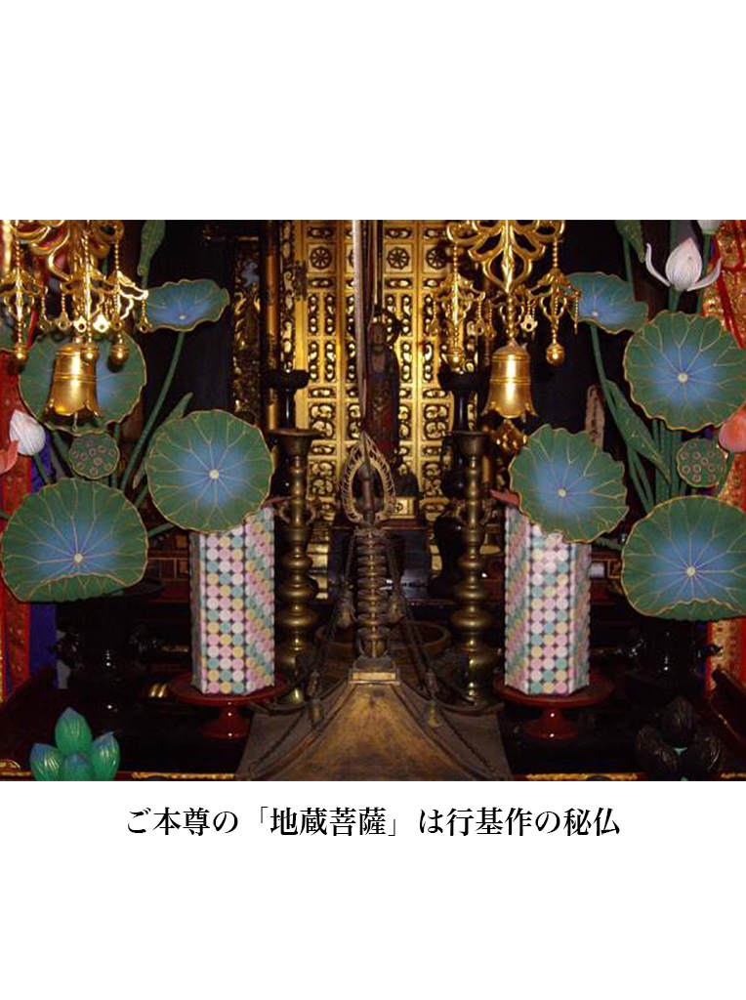
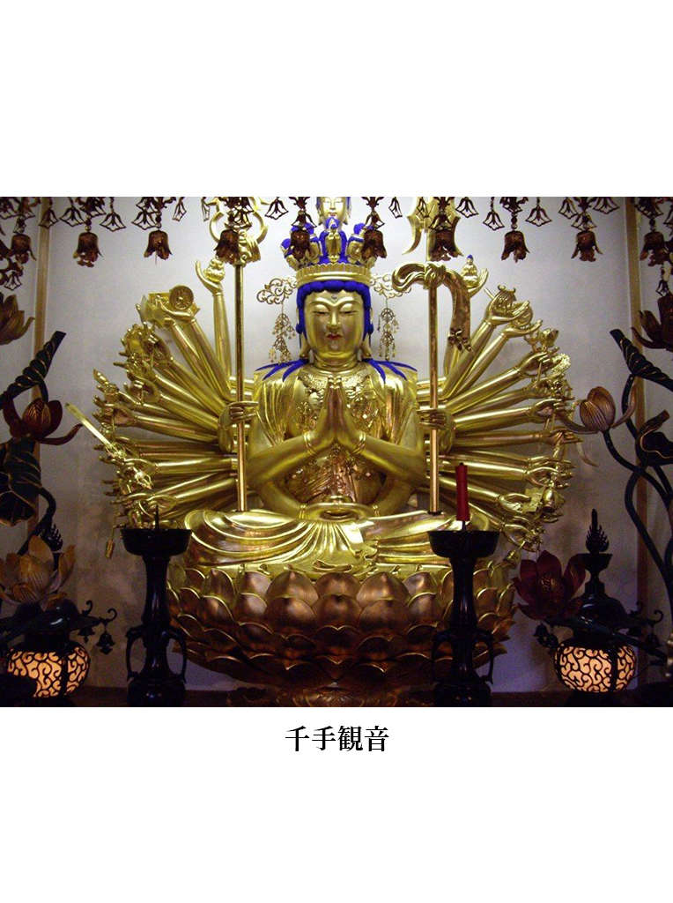
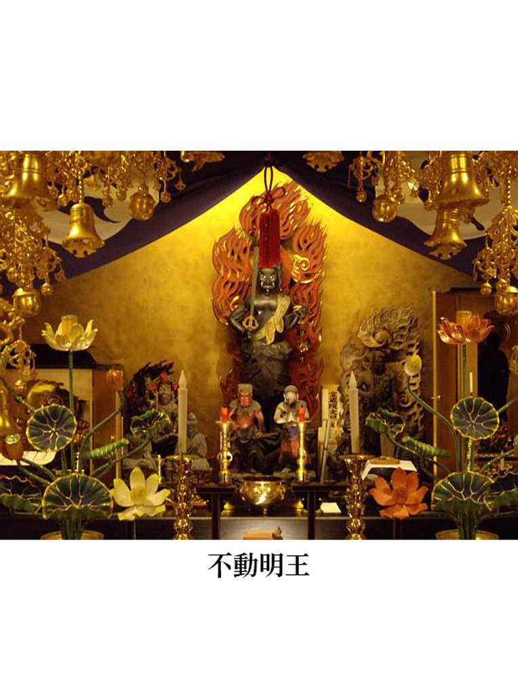
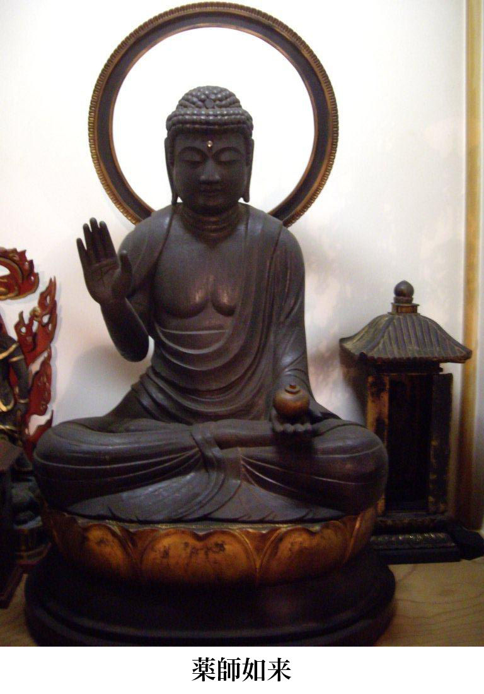
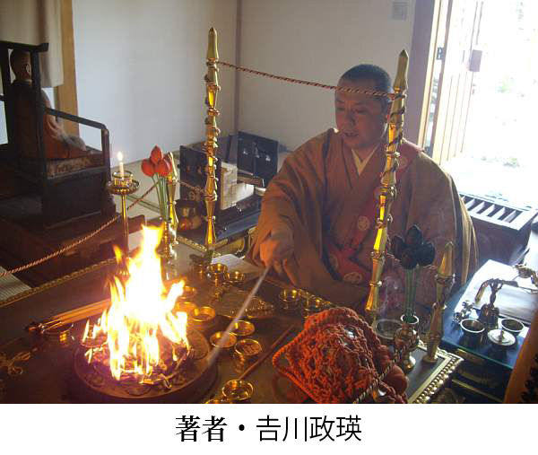

| 【大活字版】空海の言葉に学ぶシリーズ 高野山開創１２００年 空海１ すごい言葉 | |
| 中島孝志 & 吉川政瑛 | |
空海の横顔をご紹介しておきましょう。
七七四年六月一五日、讃岐国（香川県）多度郡屏風浦の善通寺で生まれました。
父は佐伯直田公（さえきのあたいたぎみ）善通（よしみち）、母は阿古屋（あこや）玉依御前（たまよりごぜん）。三男（幼名は真魚）でしたが、二人の兄が幼少期に他界してしまったために跡取として育てられます。
誕生日は「不空（ふくう）（真言密教付法第六祖）」入滅の日。不空は密経経典をセイロン（スリランカ）から唐へ伝えた僧です。そこで、不空の生まれ変わり、といわれているのです。
七歳のとき、思い切った行動に出ます。近くの捨身ヶ岳（しゃしんがたけ）に登り、「将来、仏道でたくさんの人を救いたい。この願いが叶うならば命をお救いください！」と崖から身を投げたのです。すると釈迦如来が現れて受け止めてくれた、ということです。以来、この山は我拝師山（がはいしざん）と呼ばれています。山上には空海自ら刻んだ釈迦如来像を本尊にした出釈迦寺（第七三番札所）が建立されています。
一八歳になると、空海は官吏養成機関の大学寮明経科に入学します。いまでいえば東大法学部といったところでしょうか。高級官僚まっしぐらのエリートコースです。
ところが、あるとき、「虚空蔵求聞持法（こくうぞうぐもんじほう）」を知ります。この真言を百万遍誦ずれば一切の教法文義を暗記することができる、という秘法です。そこで空海は、大学寮を退学して私度僧になり、阿波の太瀧嶽（だいりょうだけ）で求聞持法を行じはじめるのです。
このとき、室戸岬の洞窟で一心不乱に真言（呪文）を唱えていると、夜明け前に、海の彼方から明星（虚空蔵菩薩の化身）が飛来して身体の中に飛び込んでくる、という体験をしています。
二十歳になると、空海は和泉国の槙尾山寺（現、施福寺）で出家します。
空海は、入唐する前に、山岳修行がいまも盛んな奈良吉野の大峯山や伊予（愛媛県）の石鎚山、生駒山などで激しい修行を重ねています。
いずれも金（ゴールド）の産地。金の産地ということは水銀がとれるはずです。空海の人生を振り返ると、最短でも七年間もの空白の時間があるのです。いったいどこでなにをしていたのか、まったく不明な時間です。もしかすると、空海は入唐準備のために大量に金を入手していたのではないか、と思うのです。
短期間で帰日できる還学僧（最澄がそうでした）とちがって、空海はたんなる留学僧。二年やそこらで帰京が許されるはずがありません。次の遣唐使船がやってくるまでの二十年間、唐でできるだけたくさんの文化文明を吸収しなければならないのです。しかし、どうも空海ははなからさっさと戻ってくるつもりだったようです。そのための軍資金を山奥で準備していたのかもしれません。もしそうならば、文物などの入手に糸目をつけずに遣ったはずです。
話はそれますが、当時、桓武天皇が奈良の平城京を捨てて京に都を遷した動機は、金銀、水銀の採掘のしすぎによる環境汚染があったからではないか、と私は考えています。現代でいうなら水俣病やイタイイタイ病です。金を産出したあとに流れる水銀が環境を汚染させ、とても人が住める土地ではなくなっていたのではないか、と思うのです。
空海は釈尊の国インドにも行こうと考えていたかもしれません。世界を渡り歩くには金が不可欠です。
諸国行脚のなか、久米寺（大和国高市郡）の東塔で「大日経（大毘盧遮那成仏神変加持経）」を発見します。そして夢中になるわけですね。いくつも疑問点が湧いてきました。
「唐に行かなければならない」
空海の入唐求法の思いが膨らみつつありました。
空海三一歳のときにようやく夢が叶います。遣唐使船に乗り込むことができたのです。橘逸勢とともに難波津（大阪港）を出航します。意気揚々としていたでしょうね。
ところが、ときは台風シーズン。当時は難破がしょっちゅうありました。命が助かっただけでもみっけもの。一カ月以上遭難して長渓県（現、福建省霞浦県）赤岸鎮に漂着します（最澄も二カ月間漂流して寧波（にんぽう）に漂着しています）。しかし、予定寄港地は蘇州でした。
そこで、空海たちは海賊と間違えられます。というのも、正式な国書はほかの船に乗っていた副使が持っていたからです。書状を見せても上陸が許可されません。
そこで空海が代筆すると、その見事な漢文と筆力に驚き、これは正式な使節だ、と認められたわけです。漢語がわかるだけでも超エリートの証明でしたが、表現力豊かな文章に圧倒されたのかもしれません。空海の傑出した漢語力が危機を突破したのです。
ここからがまた至難の道でした。長安まで二千キロ。東京| 博多間を往復した距離です。いかに遠いかがわかります。それでも求法の思いは強く、昼夜兼行で歩き続けます。
到着したころにはすでに新年。「朝賀の儀」にはなんとか間に合いました。
空海が青龍寺の恵果（けいか）阿闍梨（あじゃり。密教の正統位）の尊顔を拝することができたのは半年後でした。
「おまえが来るのを待っていた。私の生命は尽きようとしている。早く伝法の潅頂壇（かんじょうだん）に入るように」
恵果は密教のすべてを空海に伝授します。三昧耶戒（さんまいやかい）、受明潅頂（じゅみょうかんじょう）、胎蔵法（たいぞうほう）、金剛界潅頂、伝法阿闍梨位（でんぽうあじゃりい）の潅頂を授戒して、真言密教の奥義を伝授。空海は「遍照金剛（へんしょうこんごう）」の潅頂名を授かります。
恵果が亡くなると、一千人の弟子のなかから空海が選ばれ、「恵果和尚の碑文」を書くことになります。
日本では、桓武天皇崩御。その皇子の平城天皇が即位。長安に新皇帝即位を祝うためにやってきた使節に帰日を許されます。
帰国後、朝廷に提出した「御請来目録（琵琶湖の竹生島「宝厳寺」に所蔵）」は十メートルにも及びました。唐から持ち帰ったものは仏舎利八十粒（東寺の五重塔と講堂の諸仏の頭部に納められています）、経典二一六部四六一巻。仏像、曼荼羅。国宝「紺綾地金銀泥絵両界曼荼羅図」二幅は「子嶋寺」に残っています。
最澄もお茶を持ち帰りましたが、空海のお茶は大和茶の源になっています。また、うどんの製法も修得して帰っているのです。讃岐うどんのルーツですね。
その後、空海は許可を得て和泉から入京し、高雄山寺（現、神護寺）に入り、弟子たちに密教を教えます。
八〇九年、平城天皇が病で譲位すると嵯峨天皇が即位します。嵯峨天皇は、空海と入唐した橘逸勢とともに「三筆」と言われたほどの人物です。筆が秀でているということは漢語漢詩にも通じている、ということです。
嵯峨天皇に国家安泰の加持祈祷を申し出ると、「薬子の変」などでトラブル続きの天皇はこの申し出を受け容れます。その後、空海は天皇に重用されるようになります。
嵯峨天皇とのエピソードがあります。
ある時、嵯峨天皇の勅命で空海は、大内裏十二門のうち南面三門と朝堂院正面の「応天門」の額を書くように言われます。額を門に掲げると、「応」という字の点を書き忘れていたことに気づきます。慌てず、空海は筆を投げつけて点を打ってしまうのです。これが「弘法も筆の誤り」の謂われとのこと。
「ならば、そちの説く即身成仏の現証を見せよ」
嵯峨天皇の声に空海は静かに結跏趺坐(けっかふざ)し、手に印を結び、口に真言を唱えました。すると空海の肌は瞬く間に金色に輝き、眉間に白光を放ち、頭上に宝冠を載せ、五色の光明を放散したのです。芳しい香りを秘めた絢爛たる光が周囲を満たし、すべてを包み込んでいきます。
「大日如来だ！」
八一一年（弘仁二年）、宮中で大日如来を顕したという有名な奇跡です。空海はまさに密教の儀式を用い、出逢ったすべての人に仏の世界を体験させたのでしょう。
最澄との関係では、密教経典一二部の借覧を請われます（請借は一六回に及びました）。
その後、最澄からは不空訳「理趣釈経」も請借されますが断っています。『依憑（えひょう）天台集』で不空を天台の弟子扱いされたことへの不信感があったのかもしれません。
八一二年、最澄から潅頂を請われます。金剛界と胎蔵界の「結縁潅頂」「学法潅頂」を授けますが、最澄が望んだ「伝法潅頂」だけは授けない。
翌年、最澄は高弟の泰範（たいはん）を空海に預けて潅頂を受けさせますが、泰範はそのまま空海の弟子になってしまいます。「私から大切なものを奪った」と最澄は手紙で非難しますが、弟子も求法のために生きたいのです。三人がどれだけ苦悩したか伝わってくるようです。
八一六年、高野山に密教修行道場の建立を勅許されます。奥之院手前には藤原道長建立の灯篭堂があります。堂内では「消えずの火」が二つ。一つは白河上皇が三十万灯を献じたうちの白河灯。もう一つは「貧女の一灯」といわれるものです。
八二三年、空海五十歳のとき、嵯峨天皇に潅頂を授けます。天皇から下賜された東寺（金光明四天王教王護国寺）を真言密教の根本道場にします。五年後、中納言藤原三守から譲られた私邸を「綜芸種智院」にします。本邦初の私学校は授業料免除。庶民にも儒教、道教、仏教の総合教育を行いました。
「この世に生きている期間がもういくばくもない、おまえたちと別れるのは来年三月二一日寅の刻（午前四時）だ」
八三四年、空海は五穀を断ち、内裏真言院で後七日御修法を行い、弟子たちに最後の遺誡を終えると、香湯で身を浄め、浄衣を着て浄室に入り、床座に上って結跏趺坐。大日如来の定印を結んで弥勒菩薩三昧。そのままの姿で七日めを迎え、予言通りの日時に入定しました。
時に空海六二歳。
九二一年、醍醐天皇から「弘法大師」の諡号を下賜されます。大師とは梵語の「シャーストリ」の漢訳で「偉大な師」という意味です。
真言と天台。「いったいどこがどうちがうんですか？」と聞かれることが少なくありません。
簡単に言えば、天台宗はデパート。真言宗は専門店。真言宗は真言宗による真言宗のための真言宗の道場です。どちらがいいか悪いかではありません。すべてはご縁で決まります。
天台宗は、空海という個性あふれる創業者ではなく最澄だったから、栄西、親鸞、一遍、道元、日蓮という逸材がきら星のごとく生まれたのだと思います。
相撲も東西の横綱がいてこそ発展します。宗教界も同じで、最澄の遺志を継ぐ者、空海の遺志を継ぐ者。いいライバルがいてこそ生成発展できるのだ、と思うのです。
空海の魅力はなにか？ それは密教であり、呪術ではないでしょうか。釈尊が否定したそれです。
私は教学的なことよりもこの呪術に魅力を感じました。そこが私のスタートだったかもしれません。
あまたある空海の言葉のなかでも私がいちばん惹かれるのは、「虚空尽き、衆生尽き、涅槃尽きなば、我が願いも尽きん」(『続遍照発揮性霊集』) というものです。
虚空とは私たちの住む地球を含めた全宇宙のことです。たとえ人間が消え去ろうと、悟りの世界がなくなろうと、私の願いは尽きないぞ、というものです。
空海の願いとは何だったのか？ それは「この世は幻覚であり幻なのだ」と人間が気づくことにありました。教えを残してはいけない。空海は釈尊の教えに背いても残したのです。
はじめに大欲ありき。そう思わせる空海。
どうして途中で大学を中退したのか？「ここにいてはただのエリート僧で終わってしまう...」
「少欲知足」とは欲は少なく足るを知る、という意味です。空海自身の日々の生活は、釈尊の教えを実践していたにちがいありません。しかし、神仏の教え(即身成仏)に気づいてもらうには大欲は欠かせないのです。
空海の行動力、ずば抜けた知性と論理構成力、人間力、器、大欲...。どれをとっても超人なのです。だからこそ「虚空尽き、衆生尽き、涅槃尽きなば、我が願いも尽きん」(続遍照発揮性霊集)なのです。
私の願いは、人間は大宇宙生命 (サムシンググレート)である大日如来そのものなんだ、と気づいてほしいこと。この世の幻覚を見破った瞬間、真言密教の扉を開くことができます。
空海は山でたとえれば富士山。空海から見れば悟りとは頂上ではありません。富士山そのものが悟りです。
「富士山に登りたい」＝「空海になりたい」なのです。「こうなりたい」も「こうなった」のも地続きです。一歩も千歩も同じです。遺された空海の書物を知らなくていいのです。ひたすら「南無大師遍照金剛」と唱えればいいのです。
「南無大師遍照金剛」は愛と感謝と光そのものです。大宇宙生命＝大日如来そのものです。
いまでも「南無大師遍照金剛」「同行二人」と言わせる空海は人物を語る前に超人なのです。
今年で開山一二〇〇年を迎えました。いまも空海が生きた時代も景色こそ違うかもしれませんが、政治、経済、社会は時代閉塞感がきわまり、総混迷総混乱だったのではないでしょうか。空海の秘術にどれだけの人が救われたことか。
いまほど、空海が必要とされる時代はないのかもしれません。
「三界の狂人は狂せることを知らず、
四生の盲者は盲なることを識
らず、
生まれ生まれ生まれ生まれて生の始めに
暗く死に死に死に死んで死の終りに冥し」
［秘蔵宝鑰］
「あなたたちは夢遊病だ。眠っているのに、眠っていることを知らない。どんな環境に生まれようとだれもが仏になれる。盲者は盲者であると気づかないように、自己の思いこみや刷り込みで、何者であるかを気づかせないようにされている。神の子仏の子なのに目隠しをされている。
基本を理解せず、金持ちになろうが成功しようが心が満たされることはない。むしろ、成功を収めれば収めるほど不安と怖れが芽生えることになる。これは本当の幸福ではない。本質がわからないと何度生き死の輪廻を繰り返しても闇は消えない」
「三界の狂人」とは、私たちの心の住む世界のことです。四生とは、（１）胎生（母胎中で体を形成して生れた生き物）、（２）卵生（卵の形で生れた生き物）、（３）湿生（湿気のある場所から生れた生き物）、（４）化生（過去からの業の力によって生れた生き物）をいいます。
空海は人を四生にたとえています。何回生まれようと死を繰り返そうと、生命の本質をとらえない限りあなたの心は暗闇のままでしょう。
あなたがいま生きている社会は存在しないのです。いわば、鏡に映っている世界だからです。
私たちは鏡に映った世界を本当の世界と勘違いしているのです。髪型が気に入らないといって鏡に文句をいい、鏡に手を当てて髪型を直すようなものです。
この世界は自分の心の状態を反映した世界です。同じものを見ても人それぞれに受け止め方は異なります。すべては相対的なもので、絶対的なものではありません。
「おにぎり」を例にとれば、「おにぎり」という絶対的なものはありません。腹が減っている人にすれば「美味しそう！」になり、コンビニの店員さんから見れば「商品」に見え、お母さんが作れば「お弁当」です。物事にはいろんな側面があるのです。それはそれぞれの人の心というフィルターを通して見ているからです。フィルターは眼鏡です。どんな眼鏡をかけるかによって見える風景は変わってくるのです。
「なんてつらい人生なんだ」「どうして私だけが！」と苦しんでいる人でも、ちがう眼鏡をかけたとたん、「それほどでもないな」「見栄や虚栄を捨てればいい」「まだまだできる！」と気づきます。
「末学、大虚を小室に逃 す」
［秘密曼荼羅十住心論］
「本当の学問は、自然の摂理、道理、法則を教えることなのです。自分がどうしてこの世に誕生したのか？ 自分の役目はなんだろうと考えたり、生死とはなにか、どうして人の目を気にするのか、なぜこの親のもとに生まれたのか？ 疑問を解明することが学問です。親も教師も友人も誰も教えてはくれない。知らないからだ。そういう人たちのことを末学という」
人はだれもが素晴らしい可能性と力を秘めています。足の速い子もいれば遅い子もいるでしょう。知識を学びやすい子もいれば苦手な子もいると思います。
それぞれ全部違うのです。この違いこそが可能性です。その人の潜在能力といってもいいでしょう。
ところが、私たちは同じ人間になるよう、つまり、勉強のできる子供、スポーツのできる子供、心の優しい子供...すべての分野で完璧な優性遺伝ともいうべきレベルを要求して、なんとも感じていないようです。
あなたはあなたらしく生きればいい。あなたはあなたにふさわしい人になればいい。やりたいことをやればいい。わざわざ「他人」にならなくていい。あなたはあなたになればいいのです。
あなたには無限の可能性があります。いま引きこもっていたとしても、それは伏龍、鳳雛というものです。伏龍、鳳雛とは、髀肉之嘆をかこっていた劉備玄徳が司馬徽こと水鏡先生に会ったとき、「伏龍と鳳雛のどちらかを得れば天下を握れる」と聞きます。
伏龍は池の淵で眠り、まだ天に昇ろうとしない龍のこと。これは諸葛亮孔明のことです。鳳雛とは鳳凰の雛。すなわち、龐統をさします。まだ世に見いだされていない天才がいるぞ、どちらかを指南役にすれば天下人になれる、というわけです。
あなたは自分のことを伏龍であり鳳雛であると認識しなければいけない。「そんなすごい人ではない」「買いかぶりです」ではありません。まず、自分が自分を信じなくてなにができる、というのですか？ 「自信」とは自分への信仰のことです。まわりのだれが何を言おうと、私は天才だ。きっと将来、大をなす、いまはくすぶっているけど必ずなにかやる。前を向いて歩こう、と一歩進めばすべてが変わるのです。
どんなに頭のいい人でもこの本質を知りません。まして、自分のことはなにも知りません。自分を知らない人が人間の可能性を過小評価し、こじんまりとした人間をつくりだしているのです。
子供はみなオーラに包まれ輝いています。成人するとともにみなが同じような顔になり、オーラは消え失せしょんぼりとしています。いまこそ、自分の横っ面をひっぱたいて目を覚ましましょう。
「毒箭 を抜かずして、空 しく来処 を問う」
［続遍照発揮性霊集］
「毒のついた矢が刺さっているのに、どこからこの矢は飛んできたのか？ 誰が毒矢を撃ったのだ？ と追及ばかりしているうちに身体に毒がまわって死んでしまうぞ」
自分のことを大事にしなさい、という。はたして本当に大切にしているのでしょうか？
人間にとって大切なことはなにか？ そのいちばん大切なことを疎かにして、どうして人生の成功者となることができましょう。
「家が貧乏だから悪いんだ」「学歴がないからダメなんだ」「口下手だから営業成績が上がらないんだ」...犯人捜しをしている暇があるならもっと創意工夫すればいい。小人閑居して不善を為す。つまらない人間は暇人です。暇だからどうでもいいことばかり考えてしまうのです。
考える暇もないほど忙しい人はよけいなことがつけこむ隙がありません。忙しいとは「心をなくす」と書きますが、つまらんことを考えるくらいなら心をなくしたほうがはるかにましだ、と思うのです。
毒矢はつべこべ言わずにさっさと抜いてしまえ。「家が貧乏だから悪い！」のではなく、いつまでも自分の怠け心を正当化する理論武装はやめましょう。愚痴をこぼしていても未来が拓かれるはずがありません。
愚痴をこぼしている間はだれもあなたに同情しないでしょう。「あいつはあんな環境なのにへこたれないな」「たいしたヤツだ」と一目置かれるのは、けっして愚痴や不平不満をこぼさない人間です。
「理解してくれる人が周囲にほとんどいない。私の研究は本当に人の役に立つんだろうか？」
iPS細胞の研究でノーベル賞を受賞した山中伸弥先生も八方塞がりで研究者を辞めようか、と思ったことがあるそうです。ツキに見放された人生。失敗の連続。ところが、人生の節目節目に救ってくれる人が現れた。たとえば、留学先の研究所長もその一人でした。彼からは研究者に必須の能力はビジョンとワークハード。このＶとＷが成功の秘訣だと、教わるのです。
「ホントかな？」「それはこの人がたまたま巧くいったからだろう」と、否定的に考えることもできます。しかし彼は素直に受け容れた。ここが分かれ目だったのではないか、と思います。
否定したり拒絶したりすることは簡単です。そうではなく、真綿が水を吸い取るように受け容れた。
「人生にとっても大事なのはＶとＷです」
すでに彼自身の哲学になっています。
コップの水が満たされているともう水は入りません。満杯にしたければいったん水を捨てること。愚痴や不平不満はゴミです。なんの生産も建設もしないからです。コップがゴミで満たされていたら、まずすべきことはゴミを捨てること。「ご破算で願いましては」とは原点に戻ること。初心に戻ること。
不運を嘆く暇があるなら、不運を忘れるほど仕事に熱中してみなさい。
「舟車 、用別 に文武 才異 なり」
［遍照発揮性霊集］
「舟は舟の役割、車は車の役割、教化・法令などによって世を治める文治（ぶんち）は文官と軍事をつかさどる官職である武官とは役割がまったく違う才能だ」
空海の教えを一言でいえば、「仏として生きよ！」につきる、と思います。仏とは？ 神とは？ そのことをまず理解しましょう、というのです。
神仏とはあなた自身のことです。あなたは他人ではありません。仏として生きるとは、仏の真似をすることです。けっして他人の真似をしていけないんですね。あなたがあなたになって生きる、ということです。
多くの人が道を誤る原因に、自分ではなく他人になろうと懸命なことが挙げられる、と思います。他人とは自分とはまったくちがった理想像のことです。
芸能人に憧れている人なら、「有名になりたい」「テレビに出たい」「売れっ子、人気者になりたい」...いろんな夢がありますね。売れっ子芸能人を見ると、「ああなりたいなあ」と憧れるわけです。もちろん、あくまでも他人であなたではありません。本当のあなたではありませんから不安と焦りがつきまといます。
その人がどんなに努力しているか、水面下のことはなにも気づきません。見ようともしません。想像もしません。
「これほどの 努力を人は 運という」と詠んだ人もいます。よっぽど悔しかったのかもしれません。
あれはあれ、これはこれ。あの人はあの人。自分は自分。「あの人みたいになりたい」という考え方を捨てて、「自分らしく生きる」と覚悟する。これが仏の生き方です。その仏を真似るのです。
このルールに気づくことが大切なのです。無理しない。比較しない。競争しない。焦りも羨みもしない。素直に生きる。するとなぜか運が好転するようになります。「なぜか」ではなく「必然的に」なのです。なぜならば、宇宙の法則（世の中の仕組み）に順応するからでしょう。
この世の中でいちばん強いのは、運を味方にすることです。これは最強です。才能よりもマネーよりも人脈よりも、運を味方にした人がいちばん強いですよね。
そのためにどうすればいいか？ 欲張らないこと。もっているものを捨てること。とらわれず、こだわらず、かたよらず。あるがままに生きる。すると、勝手に道が拓けていくのです。
舟である自分が車の真似をしてもどうすることもできません。無理に走らせたら舟底を傷つけてしまうでしょう。
本質が車である自分が舟の真似をしてどうする？ 溺れるだけです。それをわからせるために、神仏は愛の鞭を与えるのです。でないと、人は気づきませんからね。愛の鞭とは苦しみや恐れのことです。「それ、間違ってますよ」というメッセージなのです。
「珠 持てば、善念生じ、剣を把る殺心の器」
［五部陀羅尼問答偈讃宗秘論］
「珠とは宝。すなわち、仏法のこと。意識を向ければ心の曇りは晴れるけれども、剣を持ったとたん、生き物を殺そうとする心が芽生える」
私たちは他人から刷り込まれた価値観とか情報という「剣」を心に埋め込まれています。「それを取り除きなさい」と空海はいうのです。
心のありようは地図と同じで、立ち位置がわからないと、どの方向に向かえば目的地につけるかわかりません。まず心のありようを見つめましょう。「嫉妬深いのか」「欲張りすぎるのか」「自己中心的なのか」...人は自分をかばう側面がありますからね。カッコ悪いことは隠してしまい、ついつい自分を正当化してしまいます。この点にもご注意あれ、です。
どんなときに、心のありようを観察できるのでしょうか？ たとえば、女性は嫉妬深いといわれますが、男性も隠しているだけでかなり嫉妬深い生き物です。経営者や政治家など、権力や権威をもっていると思われる人たちの嫉妬深さは量りしれないほどです。
もちろん、私のような仏門で修行している僧侶とて同じでしょう。いや、ある意味、狭い世界で純粋培養されている者ほど嫉妬深いかもしれません。
ものすごい美女が目の前にいるとしましょう。化粧も完璧で美しさ、色気、可愛さ、気品までそなえています。洋服とバッグはブランド品。貴金属も宝石も一流品。しかも、これ見よがしではなくさりげなくつけている。さて、あなたが女性ならそういう完璧美女と遭遇したとき、どう思いますか？ まあ、その人の意識や価値観で違いはあるでしょうが、たいていは、「厚化粧って下品だわ。ブランドで着飾って嫌な感じ」という感情になりませんか？
この瞬間を見逃してはいけないのです。なんかムカつく。なんか気に入らない。こういう感情を正当化しない。
「絶対あんなブランドで着飾った人間になりたくない」
あたかもそういう人が下劣であるような表現をして自分を正当化する。大上段から発言して自分の心を誤魔化していてはいつまでも自分の心に気づきません。
さあ、「正当化」のフィルターを外してみましょう。すると本心では羨ましい、という気持ちに気づくと思います。
「そんなこと絶対ない！」
いえいえ、羨ましいのです。意識しているからこそ想いや言葉に出るのです。気にならなければ脳の片隅にも残像のひとかけらも残るはずがありません。
「人生百年に非ざれども万歳 の業を積む」
［続遍照発揮性霊集］
「人の肉体は百年もつかどうかわからない。どうして人を欺いて利益を貪るのか。結果、どれだけの業 のスパイラルに陥っているか、わかっているのか」
陶芸家の加藤唐九郎さんは、「人間、叩かれれば強くなるもの。陶芸でも傷があったり歪んでいるのが自然の摂理にかなっていて、それが本物の芸術。自分が何かの形で世の中に頭角をあらわせば必ず敵が現れる。自分よりかけ離れて上の者も下の者も敵にはならない。敵の社会的位置や実力を見れば自分の価値を知ることができる」と述べています。
いろいろ噂される唐九郎さんですが、作品を観れば彼の思想や人格、覚悟が伝わってきます。本物とはそういうものです。
順風満帆なんて人生にはありません。知識や情報で左右されると損得勘定しかできません。
本物の商品開発や研究開発に携わる人はちゃちな価値判断をしません。そのかわりストレスは人一倍。しかし、本物志向はストレス解消の方法として、逆にストレスにどっぷりと浸かることができます。
なぜでしょうか？ それはいつも覚悟の気持ちで仕事に取り組んでいるからです。
心が乱れる原因は心のありようにあります。見栄えが良いか悪いかで判断する心。人を騙しても自分の利益を謀る心。これは宇宙の法則から外れているだけでなく、自分自身を偽ることです。
「それでも成功している人がいるではないか！」
いいえ、彼らは引き替えに大きなものを失っているのです。たとえば、信頼感とか信用などの目に見えない価値です。
この世は鏡です。社会的成功を羨ましがる必要はありません。宇宙の法則を無視して築き上げた「業 」はいずれ必ず自分に返ってくるのです。
本物はどこから生まれるか？ それは目に見えない人間性、人格、人徳から生まれ出るものです。どんな物も創りあげた人の人格や思想が反映されています。本物をつくるには心を整えること。恐れや不安があっては心は整いません。インチキ人間は結果だけを重視します。結果がすべてといいます。
大切なのは結果ではなくプロセスです。もっと大切なことは初心です。初心を立てることは簡単ですが、初心を維持することは至難のワザです。初期設定を間違えると、どんなソフトウエアもインストールできません。大切なのは、まだ熱いうちに正しい価値観を叩き込むことです。
初心とは原点のことです。経営者ならば創業の動機かもしれません。ビジネスパーソンならば、何がやりたくてこの会社に入ったのか、という夢です。二、三年も経つと、面接試験で答えたことなどすっかり忘れてどこ吹く風、という人も少なくありません。それほど初心を維持することは難しいのです。
初心忘るべからず。迷ったら初心に帰る。困ったら初心を思い出す。これでどれだけ救われるか。やってみればわかります。
「良工はその木を屈せずして厦 を構 う」
［遍照発揮性霊集］
「大工の名人は、それぞれの木の特徴と個性を見極めて配置して大きな家を建てる」
庭が大好きです。いまのお寺に入ってからも、すべてとは言わないまでも、ほとんど自分の好みに造りかえました。勉強もしました。
枯山水の空間はいいな。足立美術館も素晴らしいな。徳川園も素敵だな。何気ない坪庭も小さいのになんて広いんだろう、と感じますね。木も石も下草も研究しました。どうせやるなら、と庭師さんや石屋さんに教えを請いつつ楽しみながら造りました。
そして、どうせ造るなら空海を意識しよう、空海は型にはまらない。そこを意識してみよう、と考えました。無謀な取り組みほどワクワクするものです。知らないからこそできる、と確信しました。
庭造りに精を入れると情報と人が集まり、石や灯篭や木々が集まってきたのです。
会社の経営や指導にも当てはまるような気がします。この世には一つとして同じものはありません。光り輝いているか、それともいぶし銀か。いずれにしても、すべてに個性があります。
「その個性を見極めろ！」と空海は教えています。経営者にとって最大の仕事はもちろん、後継者を見つけ、育てることです。その人のパーソナリティ、キャラクターを見抜く。適材適所で使う。これが肝要です。
庭造りをして思ったことがあります。「あまり派手な石や奇石は使わないほうがいい」というアドバイスです。
そのときはウンウンと聞きました。さて、空海ならどうするか？ あえて華やかな石や奇石を使うことに決めました。たまたま檀家さんのお一人が家を改築するときに出た庭石があるので、それを頂戴しました。これもご縁です。
派手な珍石はどこに配置するのかなかなか苦労しました。この苦労が楽しい。人と一緒です。
目立ちたい人は目立つ場所に立てばいい。ただ目立つではなく、目立って目立たずがいいのです。いくら主役でも目立ち過ぎると鼻につきます。本物ならば立っているだけで目立ちます。これが存在感というものです。
「若い連中が真似してやろうという根性になってはだめ。自分の力になるように受け止めなさい」と陶芸家の三輪壽雪さんはおっしゃる。真似とは自分でないなにか。
千利休も茶道具は「見立て」でした。すなわち、物を本来のあるべき姿ではなく、別の物として見ることです。抹茶茶碗など型にはまったものはありません。元々、飯茶碗を茶道具と見立てて使ったのです。それが現在、茶道具とはこういうものだ、侘び寂びがない等々、とにかくうるさくてかないません。もっと自由に遊ぶ余裕がなければ楽しくないでしょう。
三輪壽雪さんの鬼萩茶碗は常識を打ち砕きました。常識茶人には壽雪さんの心をくみ取れないでしょうね。
「善人 の用心 は、他を先 とし己 を後 とす」
［三昧耶戒序］
「調和のとれた人は自分より他人の利益を優先する」
この世の中で仲間同士が殺し合うのは集団をつくる肉食獣のみです。ライオンやハイエナ、チンパンジー、そして人間は仲間殺しや子殺しをします。たとえ肉食獣でも、単独生活をしている動物は同族を殺しません。
チンパンジーは五、六頭のオスが群れの一頭だけを捕まえて、飛び蹴り、殴る蹴る、そして股裂きをし、その後、犠牲者の血を飲みます。しかし、ピグミーチンパンジーは争わない。喧嘩もしない。まして仲間を殺したりはしない。彼らは攻撃性が高まるとセックスをするのです。性の不思議で霊妙な価値です。繁殖のためにあるだけでなく、融和のための道具として性があるのです。
「人口の自己調節をするために残虐性を発達させた」という説を唱えたのが動物学者のローレンツです（ノーベル賞動物学者）。
どんなテロリストも赤ちゃんの笑顔には思わず笑みがこぼれます。この無心の表情は戦争すらストップさせる力があります。笑顔最強、感謝無敵なのです。
なぜでしょうか？ 宇宙の法則に則っているからです。常識と逆です。よく考えれば理解できます。
同じ品物があったとき、少しでもお客さんの財布を考えて安くしているほうを選ぶでしょう。値段が同じなら笑顔を惜しみなく与えてくれる店を選ぶと思います。笑顔は立派な仏道修行です。
嫌みで言い返したい状況でも、嫌みを言えば商談決裂。我慢と忍耐。これが修行です。人生とはそうしたもの。
「そんなことしてまで金儲けなんかしたくない」
どうぞ、そうしてください。あなたの人生ですもの。しかし後から成功者を僻んだり妬んだりしないようにしてください。
いつも怒っている人には笑顔を添えてあげる。いつも機嫌が悪い人にも笑顔をプレゼント。笑顔は無料ですもの。優しい言葉も添えてあげましょう。これも無料です。そして徹底的に感謝する。これも無料です。お客さんには無料。あなたはコストがタダ。どちらもハッピー。とてもいいと思います。
苦虫をかみつぶしたお客さんがどうして毎度毎度、あなたに注文するのか。ほかに発注してもいいのに、わざわざあなたを選ぶのでしょうか。それは、あなたの笑顔と優しさ、そして感謝の気持ちが通じているからではないでしょうか。
「大弁 は訥 なるが若 し」
［真言付法伝］
「立て板に水でスラスラ能弁に語る人がいる。とても話も巧い。話が巧いことと人格が優れていることは別です。逆に信用できる人もいるが、ほとんどはインチキ。頭隠して尻隠さず」
本物の雄弁家は口下手だ、と空海は人間観察力で見抜いています。
本気で伝えたいことは 雄弁か訥弁かではなく、心の言葉であれば必ず伝わるのです。世の中には口べたで感情表現が巧くない人はたくさんいます。しかし、こういう人ほど正直で真摯です。口べたな人ほどひと言を選んでいますから重たいです。いい加減なことはいいませんものね。
逆に、調子のいい人、愛想のいい人ほどあてにはなりません。
調子のいい人は場を和ませる。仏頂面の人は場を緊張させる。仏頂面の仏頂とは仏頂尊のことです。これは釈迦の頭頂部、すなわち、広大無辺の功徳から生まれた仏です。知恵に優れ威厳がある。しかし無愛想に見えてしまうのです。
宇宙の法則に調和すると私たちの精神には新鮮な空気が入り力が漲ります。精神とはすぐれた心。いろんな人がいていいのです。
それぞれがそれぞれでいい。庭造りと一緒です。庭も調和がとれていないと違和感があります。調和は一本調子ではありません。単色ではありません。オールカラー、オールサウンドの世界です。だからハーモニーが秀逸なのだ、と思います。
プレゼンテーションが下手でも大丈夫です。大事なことは必ず伝わります。人間のミラーニューロンの働きを信じてもいいでしょう。
ギターやピアノのチューニングや調律に使う音叉を二つ用意します。片方をブーンと鳴らすともう片方も共振します。
プレゼンで失敗してもその失敗が評価されることは少なくありません。「玉に瑕」よりも「瑕に玉」のほうが愛されます。なぜなら、人はだれもが劣等感に悩む不完全な生き物だからです。あまりにみごとなプレゼンテーションには、「騙されているんじゃないか？」と不信感さえ覚えてしまいます。
人は欠点が多い方が愛されるのです。芸人は欠点と失敗が売りです。劣等感は立派な武器になります。口が巧い美人より口下手な美人のほうが新鮮に映ります。
口下手は長所なのです。
「自宝を知らず、狂迷を覚と謂 えり」
［秘蔵宝鑰］
「狂迷とは劣等感のこと。劣等感は迷いの世界。自分の心に宇宙生命から頂いた宝があるのに見過ごし、迷いの世界を真実だと錯覚するな」
新年に一年の願掛けをする人は多いでしょう。一年の計は元旦にあり、といいますからね。
年の瀬は大掃除。同時に心の大掃除もしたほうがいいでしょう。私たちは過去の記憶によって現在を生きています。過去は記憶だけ。すでに過ぎ去って存在しないのに囚われてしまう。
どうして毎年願掛けするのに変わりばえしない毎日を送ってしまうのでしょう？ それは、あなたがロボットのように、あらかじめプログラミングされたソフトウエアで動かされているからです。記憶はパターン化、行動もパターン化されています。
学歴コンプレックスで悩んでいる人に、つい「馬鹿じゃないか」と口にしたとたん、その言葉に異常反応して激怒。こんな人いませんか？ ロボットのようにパターン化していると起こります。
心の大掃除でも一年の計でも、パターン化された自分に気づき、どうして劣等感をもっているんだろう、と素直に自己観照をしてみましょう。これは不要だと思えば、心のオペレーション・システム（ＯＳ）から削除する、アンインストールすればいいのです。これが心の大掃除です。
心の風景は、いくらでも塗り替えることができます。劣等感から優越感にチェンジすることだっても一瞬でできます。
「どうやって？」
「いまが最高だ！ これから起こることはもっと最高だ！」
このように、心のＯＳにプログラミングすればいいのです。なにがあろうと、そのように反応できるようにプログラムを書き換えましょう。
試験に落ちた。ラッキー！ 退屈な一本道を歩まなくて済むぞ。
病気になった。病気に感謝！ 身体を休ませ労りなさい、というメッセージです。病気にならなかったらもっと大変なことになっていたでしょう。
不況で倒産した。不況に感謝、倒産に感謝。不況こそいい経営と悪い経営をくっきりと分別するチャンスです。倒産しなければ新たな道を歩めません。経営者に向いていないから倒産したのです。あなたにはもっとふさわしい道があるにちがいありません。
いざというとき、このように考えられますか？ 考えられない人は心のＯＳがまだアップデートできていないのです。いったん初期化して新しいＯＳをインストールしましょう。ここでも「ご破算で願いましては」という姿勢が大切だとわかりましたね。
「道を学んで利を謀 らず」
［遍照発揮性霊集］
「学問とは、草花を雑草と教えることではない。道端に生える草花から、大地から天に向かう生命を学ぶことにある。それを教えないで、どうして世間的価値観や利益ばかり追うのだ」
密教には如来秘密と衆生秘密があります。
なぜ秘密なのでしょう？ 密教の教えは、秘密にして出し惜しみしているわけではありません。私たちが自分の心を閉ざしているので、如来の声、自分の心の中にいる仏様の声を聞くことができない、ということです。自分で隠して秘密にしている、というわけです。
人は自分の見たいもの、聞きたいことしか受け入れないのです。
友人に恋愛相談をされたとしましょう。
「好きな人がいて付き合っていたけど別れちゃった」
「どうして？」
「なんか価値観が違うんだよ」
「どういうふうに？」
「自分勝手なんだよ。わがままだしぃ」
「そうなんだ」
「もう潮時かなって感じてたら、相手もそう思ってたみたい」
この友人は、自分を守っているのです。なにを？ 振られたショックから、です。それを、「価値観が違う」「わがまま」という言葉を駆使して相手を貶めているのです。目的は、自分は上といいたいのです。
もしあなたがこの友人にホントのことを指摘すれば怒るでしょうね。なにしろ、友人は自分に都合のいい答えを期待しているのですから。自分の真実を知っています。しかしその真実は隠しているのです。
真実を隠している限り救いはありません。
ではどうすればいいのでしょう？ 素直になりなさい。真実の姿を観つめなさい。真実は外側にはありません。自身の心の内側にあるのです。
釈尊は「自灯明、法灯明」を説きました。自分の内面にある光（仏）を拠り所としなさい。宇宙、自然の法則（摂理）に従いなさい。法則に従った行動（身）、言動（口）、思考（意）をすれば人生に困ったことは起きません。むしろチャンスに転換できます。これを「三密」といいます。
身口意の秘密を顕して宇宙エネルギーを受け取る（加持）。三密を整える。偽の思考、嘘の言葉、偽りの行動をすれば、ますます悪い業 を積み重ねてしまいます。
急いではいけません。しかし、放っていてもいけません。自分の歩幅でいいから歩く。見過ごしていることに気づく。直視する。見たいものしか見ていない自分を見つめる。
山川草木悉有仏性。木も川も花も草も石も真理を語っています。八百万の神々も真理を語っています。その真実の世界を素直に受け容れるとき、運命が変わるのです。
「官能相助 くるの功、妙 なる矣哉 」
［遍照発揮性霊集］
「神仏である宇宙生命が、言葉ではいい表せないほど、私と感応して通じ合っている」
空海の教える瞑想に「阿字観」があります。八葉蓮台の上に月が乗り、その月の中に「阿」（梵字）という文字が入っているのです。
「阿」は大日如来を表しています。大日如来とは、全宇宙を宇宙にならしめる存在のことです。
太陽系ひとつみても、惑星と太陽との間には引力が働いています。引力そのものは目には見えません。その存在が大日如来なのです。宇宙生命、宇宙エネルギーそのものです。もちろん、私たちの体の中にも宇宙生命が秘められています。
阿字観とは、イメージで自分の内なる小宇宙と大宇宙の生命を一体とする瞑想法を意味します。かなりリアルに臨場感が湧くほどイメージの中で宇宙を築きあげることがミソです。
阿字観を続けると、ある瞬間、す～っと自分の存在、時間、空間から解き放たれた、とても心地よい状態になります。その状態が宇宙と一体化している時です。この状態でいると、いままで気づかなかったことが次々に思い浮かんできます。まるで映画を見ているような気持ちです。
ここからなにがわかるかというと、すべての正解が自分の中にすでに用意されていたんだ、ということです。
私たちは何回も輪廻転生してきています。前世でクリアできなかったことを、もう一度、今世今生に生まれて修行し続けているのです。あなたは前世の記憶をリセットして生まれてきたのですが、実際にはどこかにメモリーが残っているのです。その在処を思いだせない。
いまあなたはたくさんの問題に直面していることでしょう。しかし、すべての問題はすでに過去世で経験しているものばかりです。
あなたが悩んでいる問題はとっくの昔にあなたが取り組んだ問題なのです。あなたにしか解決できない宿題なのです。あなたの心の中に正解はすでに用意されているのです。
この真理が理解できると、「ああそうなんだ。過去に経験したことを今世で再勉強しているんだ」と悟ります。いま直面している問題は神仏からのメッセージです。どんな困難があろうと、「ドーンと来い！」です。
すべてが絶妙のタイミングで遭遇するものばかりです。ご安心あれ。これからどんなことが起ころうと心配する必要はこれっぽっちもありません。あなたに起こることはすべて正しい。すべてがメッセージ。一回りも二回りもあなたを大きくしてくれるものなのです。
「心暗きとき、遇うところ悉く禍なり」
［続遍照発揮性霊集］
「心が暗いとは、めそめそ、悔やみ、恐れ、怨み、妬み...こんな恨みごとはやめなさい。どうして全力で不幸になる練習をしているのか。心のイメージは現実のものになってしまうぞ」
自分の想いとかイメージは確実に影響します。よく思えばいいことが起こり、悪く思えば不都合なことが起こる。心配ばかりしていると、その心配が現実のものになってしまいます。
「悪く思っても九割は現実には起きないんだ」という人もいますが、トラブルが起こらなかった、通り過ぎた、と判明するまでビクビク心配して生きているのですから、すでに百パーセント悪いことが起きているじゃありませんか。
大切なことは、はなから考えないこと。私たちの身に降りかかることはすべて正しいのです。絶妙のタイミングで、完璧なことが降りかかってくるのです。表面上、トラブルに見えたり、不幸の極みに思えるかもしれませんが、これはすべて、私たちの魂の修行のために訪れたものばかりです。不都合な来客かもしれませんが、怖がらすに、堂々と受け容れてしまう。これがもっとも大切なスタンスです。
本物の人間ほど力みがありません。堅くならず、肩の力を抜いています。どんなことにも対応できる柔軟性を発揮するには、これがいちばん強いのです。
「あん畜生、あんなことしやがった。失敗してざまァ見ろ！」と口にしたり、「あんなヤツ、事故に遭えばいいんだよ」とイメージすると、それがすべてあなたのほうに跳ね返ってきます。相手はこれっぽっちもイメージしていませんから事故にも災難にもトラブルにも遭いません。遭うのはあなたです。
この世は鏡の世界です。ネガティブなイメージや発言をしている人。鏡にはだれが映っているでしょうか？ あなたですよね。だから、あなたにすべて降りかかってくるのです。
愛する息子が殺された。犯人を憎むことでしか怒りと哀しみから逃れるパワーは生まれないかもしれません。それでも、犯人を憎まず、事件を忘れることが、未来には大切なのです。
怒りも哀しみも伝染病です。不幸も伝染病です。哀しいと思えば思うほど、哀しいと思っている間は、哀しみは倍増するばかりです。時間が風化してくれることもありません。
幸福も伝染病です。明るく振る舞えば生活は明るくなります。つらいときでも笑っていればいつの間にか本当に笑いがこみ上げてくるのです。泣き笑い、というヤツですね。
日本人はこれがとても得意です。幕末に来日したお雇い外国人たちの日本紀行を読むと、「日本人はつらいときでも微笑みを絶やさない。不思議な民族だ」と書いています。つらければつらいほど、ついつい笑みをこぼしてしまう。絶望的な状況に追い込まれれば追い込まれるほど笑みをこぼす。「笑うしかない！」のです。
実は、笑顔に似た表情をつくるとドーパミン系の神経活動が変化することが医学的にもわかっています。ドーパミンは脳の報酬系＝快楽に関係した神経伝達物質です。
トロント大学のサスキンド博士の『ネイチャー神経科学』誌に報告した実験や、ドイツのマンハイム大学のステッペル博士が、「笑顔に似た表情を強制的につくると感情もポジティブになる」という実験が実証しているのです。いわゆる、「顔面フィードバック効果」です。
「昇悟 の機仰 がずんば、あるべからず」
［続遍照発揮性霊集］
「悟りは常に心で願っていなければ悟れない。いきなり悟ることなどできるわけがない」
人を大切にするところに人は集まります。情報を大切にするところに情報は集まります。お金を大切にする人のところにお金は集まります。これは真実です。
残念ながら、ほとんどの人は知ってはいても実践していません。簡単なことほどむずかしい。いつでもできることほどすぐにはできないものです。
なぜか？ いつでもできると考えているからです。いつでもできるから、いまやらない。いまやらないから時間切れ。気づいたときには手遅れ、というわけです。
「ああ、あのときやっておけばよかった」
後悔先に立たずではなく、後悔後を絶たず。人生は二度とありません。失った時間はもう戻らないのです。
「そうか、もう間に合わないのか...」
これまた、ほとんどの人は諦めてしまいます。「転けたら立ちなはれ、立ったら歩きなはれ」の精神でもう一度トライすればいいんです。どうして間に合わないのでしょうか？ いったいだれが決めたのでしょうか？
かつて、福沢諭吉という人はオランダ語を勉強するために死にものぐるいでした。適塾の筆頭まで上り詰めた努力家がある日、横浜に出向くと、そこの異国人たちはオランダ語など使っていませんでした。英語が主流だったのです。十七、十八世紀に活躍したオランダはすでに国力が衰え、そのときには、イギリスの天下になっていたのです。
諭吉は愕然とします。さっそく塾に戻って、この現実をみなに伝えます。諭吉同様、皆茫然自失。声も出ません。
「こんなに死にものぐるいで学んだオランダ語がなんの役にも立たない？」
お先真っ暗。郷里に帰る者がたくさん出てきました。絶望のあまり失踪する者もいました。
福沢はどうしたか？ 「もうあの苦労はしたくない。しかし、やらねばならん」と腹をくくったのです。
結果、どうなったか？ そんなに苦労することなくマスターしてしまったのです。英語もオランダ語もドイツ語もフランス語も同じルーツを持つ言語です。国が隣り合っているのですから、津軽弁と薩摩弁のほうが通じにくいでしょう。これは、オランダ語を懸命に勉強していたおかげです。
人生というのは、こんなものです。やってみなければわからないのです。やってみもせずにさっさと諦める人。これを怠け者といいます。先が見える人ではありません。ほんの少し努力すればいいのに、その「ほんの少し」ができないのです。
「死にものぐるい」が必要なのか、「ほんの少し」でいいのか。どうすればわかるでしょうか？ やってみなければだれにもわかりません。やらずに止まったまま迷っている人がたくさんいます。
時間の無駄遣いです。さっさとやれば叶うのに、こんなところで立ち止まっている暇などありません。
「さっさとやれ！」と空海は言っているのです。
「能書は必ず好筆 を用う」
［遍照発揮性霊集］
「素晴らしい字を書こうと思ったら、それに合わせた素晴らしい筆を使わないといけない」
淳和（じゅんな）天皇に楷書用と草書用の筆を献上したとき、空海はこうアドバイスしています。
「弘法は筆を選ばず」という言葉は有名ですから、どこかで聞いたことがあると思います。しかし、弘法大師空海ほど筆を選んだ人はいません。それなりの字を書こうと思ったら、それなりの筆でなければ書けないからです。
一期一会。お茶の極意です。同時に、これは書道の極意でもある、と思うのです。人と人との出会いにも当てはまります。
最初で最後。これが今生の別れになる...かもしれない。こういう思いで人と接していますか？ 話していますか？ 「言い忘れた」なんてことがあってはいけないのです。この人とはもう会えないのですから。
出がけに、わが子と言い争いをした。事故にあって意識不明の重態。悔やむのは今朝のこと。
「どうしてあのとき、あんなことを言ってしまったのか！」と自分を責めることになるかもしれません。
もったいないですね。いまが最後。これが最後。悔いのないように生きたい。全力で話を聴き、全力で話をする。そして、忘れてしまう。もうあのとき、話せるだけ話したんだから、悔いはない。
命をおろそかにしている人が少なくありません。自分の命も人の命も粗末にしています。「もうこのときしかない」と悟れば、この一瞬一瞬を大切に大切に扱うのではありませんか。
「また今度！」
その今度はいつあるのでしょうか。もうないかもしれない。この懼れ、畏怖の念が足りないのではありませんか。
知り合いの女僧はかなりのご高齢の方ですが、会うたびに別れるたびに、涙を滂沱のごとく流して惜しんでくれるのです。「これが今生の別れ」という覚悟がそうさせるのでしょう。
どういう理由で、仏門に入られたのか詳しくは存じませんが、命の儚さを痛いほどわかっているのではないか、と推察しています。
また今度、いつかまた、そのうちに、また明日...そうではありません。これが最後、これで終わり、これしかない、と心得て生きる。時間は命です。命はそれほど儚いものなのです。
「物の興廃は必ず人による」
［遍照発揮性霊集］
「興廃を善悪に置き換えれば、いま、あなたの前に現われることはすべて心の善なる想いと悪なる思いの比重と加減によって生まれているものなのだ」
「泥中白蓮」という言葉を聞いたことがありますか？
蓮の美しい白い華は泥の中から生えてくるのです。この泥の中とは私たちの住む娑婆世界を意味しています。
蓮の華が咲くには泥沼が必要なのです。
人間の心にも善なる部分と悪なる部分があるのに似ています。善だけでも駄目、悪のみも駄目、蓮の華のように清濁併せ呑むことです。それが人間です。
こんな偉そうなことを書いている私自身も心の中を覗けばドロドロです。それも含めて自分なのだ。悪を離れて善はなし、です。
自分は汚い人間だ、という自覚もあります。それでも生かされている。生かされているということは、生きてもいいのだ。だったら生かしてくれるすべてのものに感謝したい。感謝とはそういうものだ、と思うのです。
蓮の華には泥沼の栄養が必要なのです。しかし、泥沼の中で本体の蓮根を傷つけてしまうと、そこから炎症をおこして華を咲かせなくなってしまいます。
私たちも同じです。悪に染まって染まらず。しかし水清ければ魚棲まず。このバランスが大切なのです。
「どうして、私ばかりいつも嫌なお役目に当たるんだろう？」
それがあなたに必要だからです。あなたに起きることはすべてあなたが本当のあなたになるためのメッセージだ、と考えてみましょう。
この世に絶対のものはありません。すべては「ご縁」です。この霊妙な演出がすべてを決定しているのです。
特別なヨガ聖者を除いて、私たちは心臓ひとつ自分の意思や努力で動かすことはできません。ほかの臓器も同じです。なにも文句をいわず二十四時間三百六十五日せっせと働いてくれます。
自律神経のことを昔は植物系神経系統と言いました。自動的にすべてを調整してくれている。ものも言わず淡々とです。だから、植物を連想させたのでしょう。
この大宇宙の摂理がなければ人間なんて一秒たりとも生きていくことはできません。私たちは生きているのではなく、生かされているのです。もう感謝するしかないじゃありませんか。
どうして人の成功を羨んだり、人の失敗を願ったりする必要があるのでしょう。憎しみや怒りや嫉妬も限度を超えてはなりません。時として限度を超えてしまうのも人。そんな自分をまるごと愛する。そんな人間をすべて受け容れる。
良い部分も悪い部分も併せ呑む。清濁併せ呑める、鯨のような大きな胃袋を持ちましょう。
「禿 なる樹定んで禿なるに非ず、春に会う時はすなわち栄え花開く」
［秘蔵宝鑰］
「枯れたように見える樹木も春になれば美しい花を咲かせる。どんな人でも人生にそれぞれの花が咲く」
人生は山あり谷あり。谷ばかり、山ばかりという人はほとんどいないと思います。
冬の樹木のように、人生、じっと耐える時期も必要です。苦しさがあるから嬉しさがひときわなのです。身体を折り曲げるから高く跳べるのです。
「おれは出世なんか興味ないね」
心の底から思えたら、もうすでにあなたは人生の成功者だと思います。どんなに影口、悪口を叩かれようが気にならないでしょう。
スマホにはまったく興味がありません。「いまだにガラケーなんだ？」と呆れられることもあります。
自分が興味も関心もなければ気にならないものです。もしスマホが欲しいのに買えないとなれば、この惨めさは大変なものになるかもしれません。
「スマホなんか興味ないね」と力んで言い訳をするかもしれません。中には、バカにされたと勘違いして怒り出す人もいるかもしれません。こんな低レベルの人間は出世してはいけないのです。まわりの迷惑です。
どうして出世したいのか？ 褒められたい？ お金持ちになりたい？ 威張りたい？ 権力を振り回したい？
いやいや、出世したほうが楽しく仕事できるでしょう？ そもそも威張る人は嫌われます。出世どころではありません。
「勝った試合は疲れない」といいます。「負けた試合はくたくたに疲れてしまう」ともいいます。精魂尽き果ててしまうのです。
どうせ仕事をするなら出世した方が楽しい。試合と同じで勝った方が楽しいのです。出世するのにお金はかかりません。我慢強さ、人を見抜く目、人徳でしょうか。
仕事は人を鍛え、大切なことを教えてくれます。商品開発や研究開発に携わっているなら、新商品が陽の目を浴びたとき、艱難辛苦の連続の日々が嘘のように吹き飛んでしまいます。苦しみが成功一つで風景ががらりと変わるのです。
苦しみの必要性を理解できたり、お互いの人間性が観察できたり、自分の心や意識も垣間見ることができます。仕事でしか得られない経験はたくさんあります。だから、切磋琢磨して懸命に働くことです。手を抜かずに刻苦勉励。その結果、つかんだ椅子なら憂き世のつまらない物差しは無関係です。
出世してきたのではなく、一つひとつの信用を築きあげてきたことに気づくと思います。この信用こそが出世のご褒美なのだ、とわかれば、あなたはもう一回り大きな人間になれるかもしれません。
「十悪に快うして、誰か後身の報いを悟らん」
［秘蔵宝鑰］
「十悪は毒である。こんな毒にどっぷり浸かった生き様をしていると、無限のカルマの報いがあるぞ」
夏の空き地で草が枯れているのを目にすることがあります。たぶん除草剤を撒いたのでしょう。
人間は太古の昔より微生物や細菌とともに生きてきました。土壌の中に無限の生物が住んでいます。そこに毒を撒けば雑草は駆除できるかもしれませんが、同時に目に見えない土壌菌も死んでしまうのです。そして、土に浸み込んだ毒は地下水に流れていきます。
結果は言わずと知れたことです。毒は結局、私たちに返ってくるのです。
除草剤を土壌に撒くように、実は、私たちは心身にも毒を撒いていることが少なくありません。
ご存じでしたか？ 食べものひとつとっても、安ければいい。そのため、どれだけ保存料や添加物たっぷりの食物を食べているか。保健所は食中毒だけは絶対出さないように指導しています。するとどうなるか？ 添加物という名の「毒」をたっぷりふりかけることになるのです。
食は人間の身体をつくり、言動と思考は心をつくります。心身一如。毎日毒を食べ続けた結果、心身に異常をきたすことにもなりかねません。この頃、奇妙な事件や未成年に猟奇的な事件がたくさん起きているのも、遺伝子というよりも、環境因子、とくに食物が大きな影響を及ぼしているのです。
言葉は毒にもなれば薬にもなります。吐いた毒は自分だけでなく他人も傷つけます。
大嫌いな人ができる理由は、相手のことをよく知ろうとしないからです。相手の考え方や人間性、さらには家族関係まで知れば、この世で嫌いな人など一人もいなくなるのです。
上司にいつも嫌みを言われたり、責任を押し付けたりされれば、いい気はしません。でも、少し角度を変えてみてはどうでしょうか？
「どうしていつも不機嫌なんだろう？」
「ひょっとしたら夫婦関係が上手くいってないのかも？」
「家族がバラバラなのかな？」
「借金でもかかえているのかな？」
勇気をだして相手の懐に飛び込んでみてもいいでしょう。もしかすると、あなた自身にも気づかない原因があるかもしれません。「返事が小さい」「頼まれ事をされると嫌な顔をする」等々、意外と本人は気づいていないのです。
「鼻下に糞あれば、香を嗅ぐともまた腐（くさ）し」（『秘密曼荼羅十住心論』）とも空海は言っています。
空海は面白い。自分の鼻の下に糞がある。糞とは先入観とか思い込みといったところでしょうか。素直な心になりなさい、というのです。
ユダヤの格言に、人は転ぶと坂のせいにする。坂がなければ石のせいにする。石がなければ靴のせいにする。人は自分のせいにしない、とあります。
この世は修行です。本当の自分に出会うための修行です。よっぽどのことがなければ人は自分を省みません。ありがたいことに、そのよっぽどのことをつくってくれているのです。チャンスです。あとは勇気です。嫌な相手に気持ちよく挨拶する勇気。接する勇気。話をする勇気。
嫌な人に出会ったらチャンスです。本当のあなたを確認するチャンス到来です。
「摩尼、自ら宝に非ず、工人能く瑩 く」
［秘蔵宝鑰］
「宝石は初めから輝きを放っていない。熟練の職人がとてつもない手間暇かけて磨きあげて輝いているのだ」
創造性に富んだ心を養うにはものの本質を見抜く目が必要です。見えないものを観る、という姿勢です。
たとえば、私たちは勝手に自分とはこういうものだと決めつけてしまいます。こんなことできませんよ、無理ですよ、と思いこんでいます。
私たちは一人一人がダイアモンドの原石のようなものです。光輝く存在であり、素質十分なのです。人間を含め、宇宙も地球もあらゆる生命は輝いています。どうして自分はこういうものだ、と檻に閉じ込めてしまうのでしょう。
「どうすれば幸せになれるのですか？」
「簡単ですよ。幸せから出発すればいいのです。幸せはいつかやって来るものではありません」
「周囲が私を認めてくれないのです」
「ちがいます。あなたのほうが周囲を認めていないのです」
「主人が馬鹿にするのです」
「どうしてそんな人と結婚したんですか？ 別れたらいかがですか？」
「ほかにいい人が見つかるでしょぅか？」
「いまのご主人は割れ鍋に綴じ蓋。あなたにお似合いですよ」
輝いて見えない理由は、あなたの心が輝いていないからですね。
なぜ輝かないか？ 利己的に生きているからです。なんの努力もせず、周囲が何かをしてくれるのではないか、と願う心。家族に依存する心。他人に依存する心。国に依存する心。こういう姿勢の人は、周囲に何かをしてあげようとは考えません。いつもだれかの世話にならないと一秒たりとも生きていけないのです。自分の宝石磨きは独立自尊の精神がなければできません。
自分が輝くには、まず相手を輝かせること。幸せになりたければ、相手を幸せにすること。幸せとは、幸せだと感謝して生きること。極意はとってもシンプルなんです。
「時機応ぜざれば我が師黙念す」
［続遍照発揮性霊集］
「時機とはタイミングが合うときのことをいう。弟子が教えてほしい、師が教えたい、と思う。二つの心が重なる瞬間。これがずれていると永遠に噛み合わない」
あれほど力を込めてもダメだったのに、 機が熟すとポロリと落ちる。ものごとにはタイミングがものをいうようです。
「寝ているときに発明が生まれました」
優れた発明家や研究者につき物のせりふです。どうしてでしょうか？ 彼らは覚醒中に怖ろしいほどの集中力で研究に没頭しているのに、寝ているときにアイデアや発明が生まれた。
ということは、睡眠中も無意識状態で考えているのです。ぐ～っと集中し続け、無の状態になって完全にリラックスした瞬間、「閃き」が襲うのです。その瞬間が到来するまで、寝ても覚めても集中することがポイントです。
あるとき、ひょこんと訪れるわけです。
私はお茶が好きです。お点前とかお茶を点てる、といいます。なぜ、点なのか？ 点と点をつなぐ作業が茶道だからですね。
はじめはぎこちないものですが、続けていくうちに、ある瞬間、スッと流れるようにお点前ができる瞬間が訪れます。この瞬間がたまらない。茶道もひとつの悟りの道なのでしょう。
茶道で有名なのは、一休、武野紹鴎、村田珠光、そして利休です。
利休という名前は大徳寺の僧によって名付けられた、とされています。利とは利益。利に冴える。利休は商人としても才能があり、利を生みだすことが得意な人物だったにちがいありません。だからこそ、大徳寺の和尚さんが、利を休めなさい、と命名したのかもしれません。
「もうこれ以上何も削れない」という極限まで、無駄を削り、緊張感を生み出した侘び茶。一方、壁も茶器も金ピカの絢爛豪華な黄金茶室。茶道もお点前をする人によってそれぞれ道が異なります。
利休は利休の茶道を歩み、秀吉は武将としての茶道を歩みました。どちらが優れていて、どちらが劣っている、という話ではありません。茶道を形式でとらえず、本質にある「命」を見抜いた利休にしても、命懸けで戦う武将として「北野大茶湯（おおちゃのゆ）」に象徴される大茶会を開いた秀吉にしても、どちらも素晴らしく、優劣はつけられないのです。
茶人としてお茶に宿る「命」の本質を観る。武将として「命」の本質を観る。秀吉は成り金趣味ではありません。表面を見てとらわれず、こだわらず、かたよらず、本質の「命」を観なければ、なにも観ていないことになります。
「書を読んで但 だ名と財とにす」
［遍照発揮性霊集］
「本を読むとは字を読むことではない。行間を読め。目には見えないが、心には観える。文字を追いかけ、真理、本質を学ばないから、立身出世や財欲に目がくらんでしまうのだ」
水墨画や書の面白みは余白にありますね。何も描かない「余白」こそ、見る者の想像力をかき立ててくれます。
「墨染め衣」といえば、私たち僧侶のユニフォームのことです。「墨に五彩あり」という言葉がありますが、五彩とは五色ではありません。「あらゆる色＝無限の色」という意味ですね。墨が無限色なのではなく、観る人の心に無限の色が映るのです。この空間にこそ、本質が隠されている、というわけです。
地球と月の間には何もありません。では、本当に何もないのか？ いえいえ、目には見えないエネルギーがバランスを取っているのです。空間に何もなかったら、宇宙というシステムは存在しません。
色即是空、空即是色。目に見えるものは目に見えないもの、目に見えないものは目に見えるもの。見えないものを見る。物質の世界を極めた人は目に見えない世界を感得できます。
「科学の道を少し歩めば宗教から遠ざかるが、科学を極めれば宗教にたどり着く」と行ったのはワクチンを開発したことで知られる、フランスの細菌学者ルイ・パスツールです。
すべての存在は言葉を発しています。緑の葉は清々しさを教え、川のせせらぎは清らかさを教え、雲は諸行無常を教えてくれます。見える人には見え、聞こえない声なき声を聴くことだってできるのです。
木々は育ててくれた人にも、切ろうとした人にも、等しく涼しい木陰を提供し、甘い実を与える。木は平等心を与える。
山々は、暑い日も寒い日も、風が吹こうと雨が降ろうと悠然とし、私たちに体のことを気にしすぎないように教える。
鳥は明日を思いわずらわず、見つけただけの餌で満足して暮している。鳥は満足すること、将来を思いわずらわないことを教えてくれている。
自然はこそ最高の師である、と教えてくれているのです。
「沈迷 の端 驚かずんばあるべからず」
［続遍照発揮性霊集］
「いまが絶好調と勘違いしてはいけない。この世は天国と地獄の剣が峰にある。いますぐ迷いを断ち切れ」
自分ひとりで生きているわけではありません。この世はすべてが関係性で成立しています。
江戸時代の僧、臨済宗の白隠慧鶴（はくいんえかく）が伝える「坐禅和讃（ざぜんわさん）」は、坐禅の教えを庶民に噛み砕いて伝えてくれています。
衆生本来仏なり 水と氷の如くにて 水を離れて氷なく 衆生の外に仏なし
衆生近きを知らずして 遠く求むるはかなさよ
譬えば水の中に居て 渇を叫ぶが如くなり
長者の家の子となりて 貧里に迷うに異ならず
私たちは、すでに仏なのです。水と氷。水がなければ氷はできません。私たちを抜きにして仏などありえないのです。
にもかかわらず、仏であると気づかずあちこちを探しまわっています。まるで、水の中にいながら、喉が渇いた、水をくれ、と叫んでいるようなものです。金持ちに生まれながら貧乏だ、貧乏だ、と嘆いているようなものです。
ひとりで生きている、と錯覚している人が急増しています。ひとりで生まれて、ひとりで生きていく。だれの世話にもならない。人間関係を断ち切ってネットの世界だけで生きる人が少なくありません。
「一身独（いっしんひと）り生歿（せいぼつ）す。電影（てんえい）是れ無常なり」（『遊山慕仙詩』〔性霊集〕に掲録）
「人はみなひとり生きて、ひとりで死ぬ。一瞬の稲妻のように無常なものだ」
空海はひとりで生きろ、といっているわけではありません。いや、逆に、ひとりで埋まりて、ひとりで死んでいくからこそ、ひとりで生きていってはいけないのだ、と読み解くべきではないでしょうか。
阿弥陀仏がそのまま悟りの世界に埋没せず、もう一度、大衆（だいしゅ）を救うためにこの世に顕現したのはなぜか？ ひとりで生きず、悟りからほど遠い大衆のレベルに合わせて導こう、と決意されたからではありませんか。如来という「来」の意味は、往復を意味します。悟りの世界から大衆の世界へ、そしてもう一度、悟りの世界へと誘ってくるから、如来は往復しているのです。
ひとりで生きる。自分の世界から一歩も出ない。人は人、自分は自分と壁をつくる。人と人という世界で生きられない。
どれほど人がおかしくなっているか。引きこもりだけではありません。親が子を殺し、子が親を殺す。ライオンですらそんなことはしません。身体の中が見たい、と同級生の首を切り、腹を切り裂く、人を殺してみたい欲求が止まらず、行動に移す。
とんでもない世の中？ 狂った時代？ 爆弾こそ落ちていませんが、戦争以上の殺戮が始まっているのかもしれません。
「ボルジア家三十年の殺し合いはルネサンスを生んだ。スイス五百年の民主主義と平和がいったい何を生んだ？ 鳩時計だけじゃないか」
映画『第三の男』。オーソン・ウェルズの名せりふですね。
スイスだけではありません。この日本も同じです。戦争で明日をも知らない命であった時代のほうが、命が神々しく扱われていたような気がします。いまほど、命の価値が暴落している時代はありません。マネーの暴落、大恐慌以上に、命の価値が大きく毀損しているのではないでしょうか。
「風燭 滅 え易く、良辰 遇い難し」
［高野雑筆集］
「人生は風前の灯のように消えやすい。吉日に遇うのは困難です。だから、人は楽を選びたがる。しかし、楽な道には発見がない」
「人生は風前の灯のように消えやすい。吉日に遇うのは困難です。だから、人は楽を選びたがる。しかし、楽な道には発見がない」
なぜでしょうか？ 自分の心が観えなくなるからです。厳しい状況にこそ、自分の真の姿に出会えるのです。弱さ、醜さ、せこさ...これらをすべて含めて自分なのです。
人はみな違います。違うから面白いのです。違って、面白いから、エネルギーが湧いてくるのです。活気とはエネルギーです。
なぜエネルギーが満ち溢れていないのか？ 当たり前です。人はそれぞれ個性をもっています。顔が全員違うように個性も違います。画一的な教育で潰された人間がたくさんいます。
枠から飛び出た人はいじめられ、嫉妬心をいだかれ、悪口を言われますが、そのくらいでなれば、本物ではありません。
どのくらい非難されたら一人前か。影響力があるから非難されるのです。攻撃されるのです。空海、親鸞、日蓮、道元などなど、既存の権威や権力からどれだけ攻撃されたか。彼らは影響がある、本物だから、攻撃されたのです。にせ物で、無力だったら、目の敵にされるわけがありません。攻撃する人、非難する人、悪口を言う人ほど、あなたの実力を正確に評価し、だからこそ、あなたに恐怖を感じて、行動に出るわけです。
悪口を言われたら大喜び。「そろそろ一人前に近づいた証拠かな」と思えばいいのです。
逆に、悪口を言いそうになった瞬間、その人の負けです。本物ならば、悪口は勲章くらいに思っています。いじめなど、なんともおもいません。いじめられていると感じることすらないでしょう。
「木鶏」の境地にあるからです。
木鶏とは『荘子』の中にある有名な話ですね。簡単に紹介しますと、昔、中国で紀省子というものが王のために闘鶏を養っていました。
ある時、すごい闘鶏を手に入れます。王様は十日ほど経って「どうだ、もう闘わせてもいいか？」と訊ねますが、「いやまだ空威張りして闘争心があるからいけません」と答えます。もう十日ほどして、「どうだ、もういいか？」と訊かれても、依然として「いや、まだです。ほかの鶏の声や姿を見ただけでいきり立つからだめなのです」と言う。さらに十日経っても「まだいけません。目を吊り上げて威張っているから話になりません」と言うのです。さらに十日経ちました。
「近し。鳴くものありといえども、既に変ずる無し。これを臨むに木鶏に似たり、その徳、全（まった）し」
よその鶏が鳴いても顔色を変えない。まるで木彫りの鶏のようです。本物の闘鶏に仕上がった。実際に闘わせてみると、他の鶏は闘わずして逃げるばかり。
「お主、できるな」と言われるレベルでは全然だめなのです。仕事ができるかどうかわからない。いつの間にか鮮やかに済ませてしまっている。勝っても負けても態度が変わらず泰然自若。
慌てず、騒がず、乱れない。まさに木鶏。そんな境地になりましょう。
東京生まれ。早大政経学部政治学科、南カルフォルニア大学大学院修了。ＰＨＰ研究所、東洋経済新報社を経て独立。経営コンサルタント、経済評論家、ジャーナリスト、作家、出版プロデューサー、大学・ビジネススクール講師。
「原理原則研究会in 東京」
「原理原則研究会in 大阪」
「原理原則研究会in 博多」
「原理原則研究会in 名古屋」
「原理原則研究会in 神の国出雲」
「原理原則研究会in 新潟」
「原理原則研究会in 札幌」
「中島孝志のスピリチュアル研究会」
「中島孝志の日曜読書倶楽部」
「松下幸之助経営研究会」いずれも毎月開催。
「濡れ手で粟！ 中島孝志のビジネス研究会」
講演・セミナーは銀行、メーカー、外資系企業等で高い評価を得ている。全国紙をはじめ専門誌、永田町メディア、金融経済有料ネット、大手企業の社内報から宗教団体機関誌などの連載を20 年以上続ける。
著訳書は２８０冊超。電子書籍１００冊。政財界をはじめとした要人プロデュースは延べ５００人超。
読書は年間３０００冊ペース。落語と大衆演劇、そしてシャンソンの熱烈なファン。
音声＆テキストで平日毎日配信！ ビジネスで使えるインテリジェンス情報サイト「中島孝志の 聴く！ 通勤快読」＆年３０００冊読破の読書王
メルマガ「中島孝志の読む！ 通勤快読宅配便」が超人気！
http://www.keymannet.co.jp/
■中島孝志のキーマンネットワーク
http://www.keymannet.co.jp/
■中島孝志の 聴く！ 通勤快読
http://www.keymannet.co.jp/listen/
■ほぼ毎日発行メルマガ「中島孝志の読む！ 通勤快読宅配便」
http://foomii.com/00080
１９６９年、愛知県生まれ。愛知学院大学に入学するも疑問を感じて中退。
その後、18 歳からありとあらゆる仕事を経験。１９８９年、思うところあって智山専修学院にて修行を始める。
１９９０年、愛知四大観音寺・笠寺観音副住職。２０００年、宝蔵院住職。現在に至る。
この間、１９９７年、「四国歩き遍路」で得た経験を生かし、多くの方に信仰のご利益を味わっていただく目的で「四国遍路巡拝」をプロデュース。
参加者に経営者が多く、以来、従業員教育を担当する。
２００２年、笠寺観音の跡取りでありながら無名寺を再建するために独立。朝日新聞で大きく取り上げられる。
２００３年、中京テレビのドキュメント番組「平成のお遍路さん」で特集される。
そのご縁で、ボストン美術館のあるANAクラウンプラザホテルグランコート名古屋の新入社員研修と坐禅研修を依頼される。
フジテレビ「とくダネ」、東海ラジオ「飛びだせ名古屋のヤングたち」、中日新聞「宝蔵院の木喰上人作 千手観音像」、「ぴあ（「年末年始に参拝するパワースポット）」、「東海札所めぐりガイドブック」、そごう美術館、山梨県立博物館はじめ全国有名デパートに「千手観音」「えびす神」を貸し出す。
「住職と行く四国巡礼ツアー」は毎年開催、説法と研修は、警察官研修の坐禅と講話のほか、クラウンプラザホテルグランコート名古屋（毎年）、中部コーポレーション（毎年）、杉田石材（毎年）、三和清掃（毎年）、中島総合法律事務所（毎年）、メンバーズ琴線、敬ギャラリー（東京南青山）、笠寺観音（毎月）、成田山（毎年）、大須観音（毎年）等、全国で精力的に行っている。
四国巡礼、観音巡礼、名古屋21 大師巡礼、西国三十三観音巡り（関西一円）なども主催している。
著書に、「「腹を括れば道は拓ける」煩悩和尚の人生を変えた、空海の言葉。 手塚治虫の漫画『ブッダ』で解説」（マガジンハウス、２０１５年）、「空海 願望を実現する力」(実業之日本社、２０１５年)。
■布施屋地蔵 宝蔵院
http://houzouin.jp/






【大活字シリーズ】空海の言葉に学ぶシリーズ
高野山開創１２００年 空海１ すごい言葉
発 行 日 ２０１５年６ 月10 日
著 者 中島孝志・𠮷川政瑛
発 行 者 赤井 仁
発 行 所 ゴマブックス株式会社
〒１０７| ００６２
東京都港区南青山６丁目６番地22 号
(c) Takashi Nakajima, 2015
(c) Seiei Yoshikawa, 2015
ゴマブックスのホームページはこちら
http://www.goma-books.com
ブックスペースのホームページはこちら
http://www.ebksp.jp/